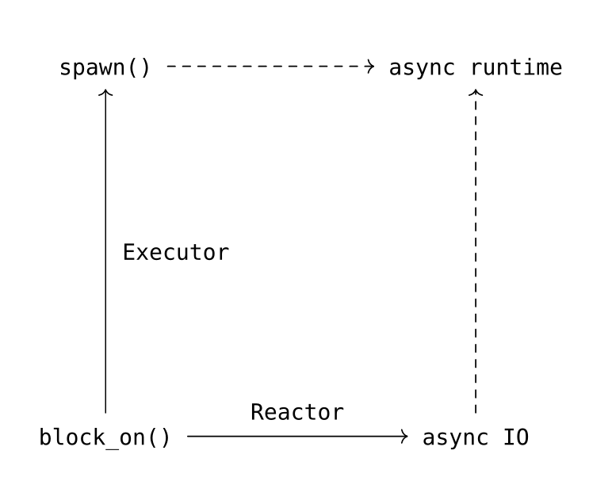

结论
至此，我们已经获得了一个功能相对完整的异步运行时了。这里将异步运行时打碎成block_on, Reactor, Executor三个最基础的组件，其实我们已经拥有了几乎没有上限的定制运行时的能力，我们完全可以控制Future的执行时机，可以拥有什么权限等等。
可惜，现在tokio当道，tokio则几乎没有定制的能力，作为使用者没法拒绝得了tokio全家桶，哎。
最后画一个图来总结下

- 异步运行时最基础的一个功能是
block_on()，对一个Future进行求值，其最简单实现就是对Future进行轮询poll。 - 我们通过引入一个
Reactor（一个IO的event loop），获得了异步IO的能力，比如文件读写、Timer等。 - 然后我们再加入一个
Executor时（利用多线程对Task进行调度），我们就获得了多线程并发的能力，也就是spawn()接口。 - 同时有了
block_on(),Executor和Reactor之后，我们就能获得一个功能相对完整的异步运行时。（当然，不一定要有Executor和Reactor这两个抽象，tokio就是将两者合二为一）